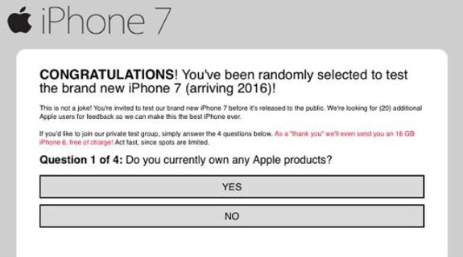
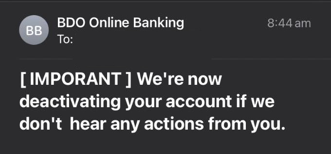
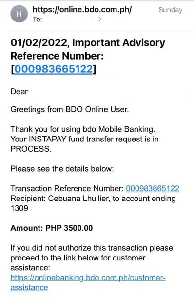

Introduction
The term "social engineering" refers to a wide range of malicious activities carried out through human interactions.
It tricks users into disclosing their sensitive information by tricking them using carefully crafted emails, texts, or posts.
Social engineering is not a one-step process. First, there is a reconaissance phase. It is the phase in which the attacker uses OSINT (Open-Source Intelligence) and illegally obtained data in order to collect the necessary information about the victim. This makes the attacker have a list of the possible weaknesses of the victim or “entry points” to ensure a higher chance of the victim falling into the phishing attack. Having this list can make the victim somehow trust the attacker and think of the phishing attack as a legitimate one.
The next phases involves engaging to the target, executing the attack, and possibly covering all the tracks.
Social engineering attacks are very dangerous because it relies on human error. Even if a system is “unhackable”, its weakest point is still the users because it leverages the victim's basic emotions such as happiness, sadness, fear, and anger.
Social engineering attacks that we experience normally tries to gain advantage of human emotions by using the following:
Reward (happiness)

Punishment (sadness)

Stress (fear and anger)

All images shown above are examples of social engineering attacks found in the wild. We can see how these attacks tries to gain advantage of human emotion in order to hack their victims.
Reference:
https://www.imperva.com/learn/application-security/social-engineering-attack/https://www.frontiersin.org/articles/10.3389/fpsyg.2019.00781/full